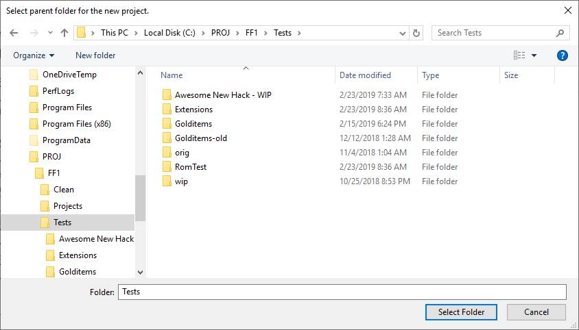
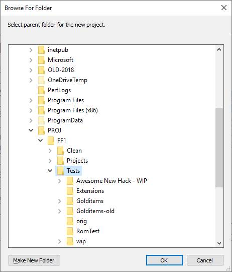
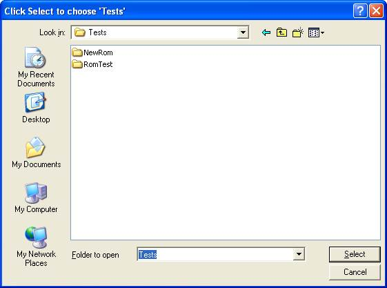
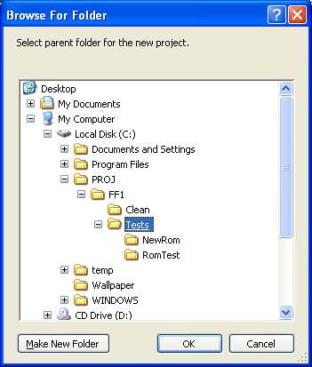

Folder Browsing
I received some complaints about the Shell Folder Browser dialog. The complaints mainly centered around the fact that the there is no address bar. I also noticed that the majority of the feedback came from XP users.
On Vista and later, the MFC file dialogs wrap the new IFileDialog interface, which presents
the File Dialog as a folder picker.
That allows the use of the address bar, and folders
can be typed into the filename selection combo edit as well.
However, this isn't available on XP.
To help XP users, I made some experimental modifications to the file dialog to get it to work like the Vista-forward dialog. It's not perfect, but it at least provides the 'Folder to open' combo edit that allows the user to enter folder names or paths to navigate faster.
For those who prefer the Shell Folder Browser, uncheck the App Settings option to bring it back.
Vista and later
The Vista-forward Folder Picker dialog.

The Vista-forward Shell Folder Browser dialog.

Pre-Vista
The pre-Vista Folder Picker dialog.
The current folder will be seldcted when 'Select' is clicked, so a good rule of thumb is to navigate into
the desired folder before clicking 'Select' (it is a hack, after all).

The pre-Vista Shell Folder Browser dialog.
